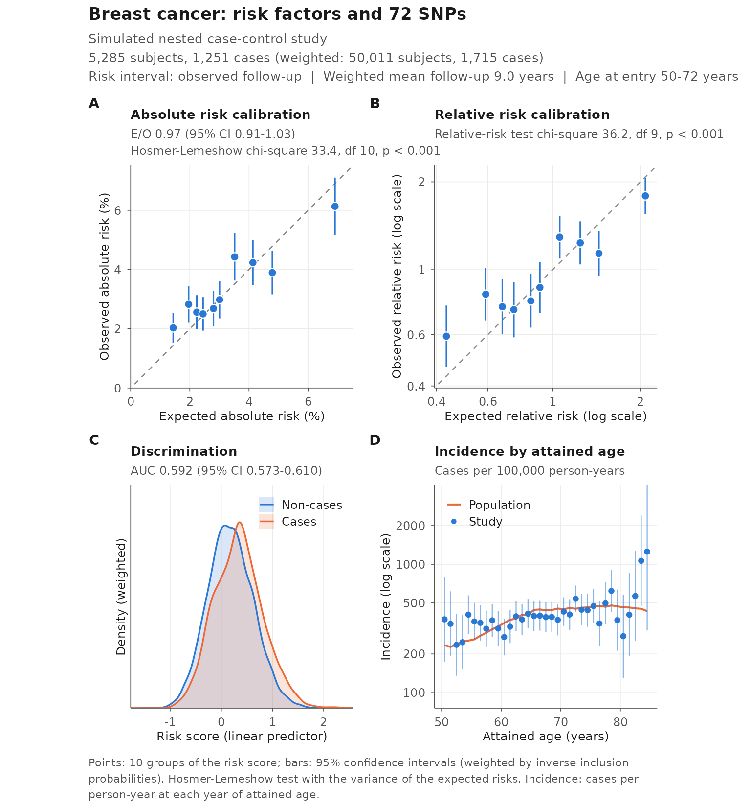
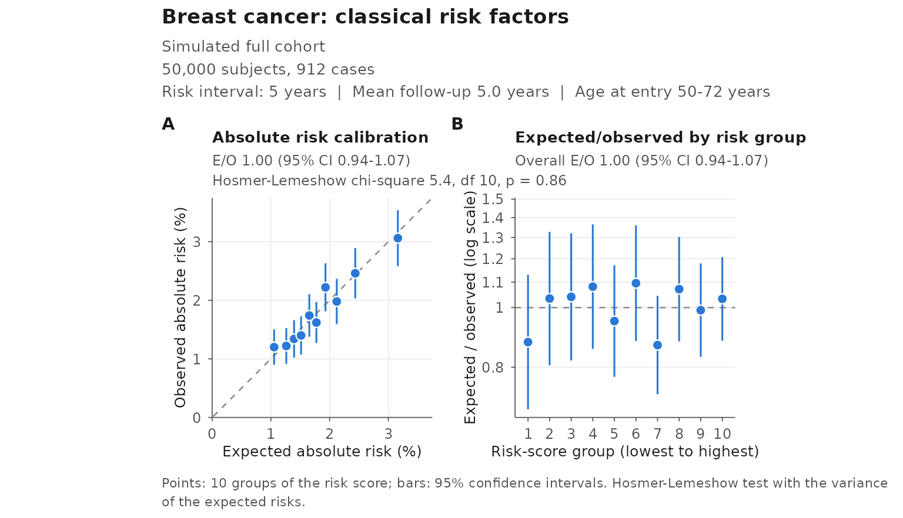

This vignette belongs to an unofficial, refactored distribution of iCARE; the official package is distributed by Bioconductor.
vignette("differences", package = "iCARE")lists every difference, including the corrected and new validation statistics described here.
A risk model is useful only if its risks are accurate in the
population where it is applied. ModelValidation() compares
the risks predicted by a model with the outcomes observed in an
independent study, either a full cohort or a
sample drawn from a cohort with known inclusion
probabilities, such as a nested case-control study. It reports
- calibration in the large: the ratio of the expected to the observed number of cases (E/O);
- calibration by risk group: within groups of the risk score (deciles by default), the observed and expected absolute risks, relative risks and E/O ratios, with a Hosmer-Lemeshow test of the absolute risks and a test of the relative risks;
- discrimination: the area under the ROC curve (AUC) of the risk score;
- the study’s incidence rates by attained age, to compare with the population rates the model was calibrated to.
plotModelValidation() draws them in one figure.
The study data
study.data has one row per subject and the columns
| Column | Meaning |
|---|---|
observed.outcome |
1 if the disease developed during follow-up, 0 otherwise |
study.entry.age |
age at entry into the study |
study.exit.age |
age at the end of follow-up |
time.of.onset |
years from entry to onset; Inf or
NA for subjects without the disease |
sampling.weights |
only for a sample from a cohort: each subject’s probability of inclusion |
Risks are validated over a fixed interval after entry
(predicted.risk.interval, e.g. 5 years) or over each
subject’s observed follow-up
(total.followup.validation = TRUE). Each subject is
followed for the shorter of the interval and the observed follow-up, and
counts as a case only if the disease develops within that time.
The predicted risks and the risk scores (linear predictors) can be
supplied (predicted.risk, linear.predictor) or
computed by ModelValidation() from a description of the
model (iCARE.model.object, a list of arguments of
computeAbsoluteRisk()).
A nested case-control study
The example nested case-control study samples 5,285 women from a
cohort of 50,000. Its inclusion probabilities are not given, so, as in
the official vignette, we estimate them by a logistic regression of
inclusion on case status, age at entry and follow-up in the full cohort.
(Subjects are matched by id, so the code does not depend on
the order of the rows.)
cohort <- validation.cohort.data
ncc <- validation.nested.case.control.data
cohort$inclusion <- as.numeric(cohort$id %in% ncc$id)
cohort$observed.followup <- cohort$study.exit.age - cohort$study.entry.age
selection <- glm(
inclusion ~ observed.outcome * (study.entry.age + observed.followup),
data = cohort, family = binomial()
)
ncc$sampling.weights <- fitted(selection)[match(ncc$id, cohort$id)]
summary(ncc$sampling.weights)
#> Min. 1st Qu. Median Mean 3rd Qu. Max.
#> 0.03008 0.07612 0.10964 0.24876 0.17982 0.86280We validate the model with the 13 classical risk factors and 72 SNPs
over each woman’s observed follow-up, letting
ModelValidation() compute the risks:
set.seed(50)
model <- list(
model.formula = bc_model_formula,
model.cov.info = bc_model_cov_info,
model.snp.info = bc_72_snps,
model.log.RR = bc_model_log_or,
model.ref.dataset = ref_cov_dat,
model.disease.incidence.rates = bc_inc,
model.competing.incidence.rates = mort_inc,
model.bin.fh.name = "famhist",
apply.cov.profile = ncc[, all.vars(bc_model_formula)[-1]],
apply.snp.profile = ncc[, bc_72_snps$snp.name]
)
ncc_validation <- ModelValidation(
study.data = ncc,
total.followup.validation = TRUE,
iCARE.model.object = model,
dataset = "Simulated nested case-control study",
model.name = "Breast cancer: risk factors and 72 SNPs"
)
ncc_validation
#> iCARE model validation
#>
#> Dataset: Simulated nested case-control study
#> Model: Breast cancer: risk factors and 72 SNPs
#> Model formula: diagnosis ~ famhist + as.factor(menarche_dec) +
#> as.factor(parity) + as.factor(birth_dec) +
#> as.factor(agemeno_dec) + as.factor(height_dec) +
#> as.factor(bmi_dec) + as.factor(rd_menohrt) +
#> rd2_everhrt_e + rd2_everhrt_c + rd2_currhrt +
#> as.factor(alcoholdweek_dec) + as.factor(ever_smoke) +
#> as.factor(rd_menohrt) * as.factor(bmi_dec)
#> Risk prediction interval: observed follow-up
#> Subjects (cases): 5,285 (1,251)
#> Weighted subjects (cases): 50,011 (1,715)
#> Follow-up (years): weighted mean 8.99 (range 5-13)
#> Age at entry (years): weighted mean 61.0 (range 50-72)
#>
#> Calibration
#> E/O: 0.969 (95% CI 0.910-1.032)
#> Hosmer-Lemeshow test: chi-square 33.42, df 10, p < 0.001
#> (variance from the expected risks)
#> Relative-risk test: chi-square 36.18, df 9, p < 0.001
#>
#> Discrimination
#> AUC: 0.592 (95% CI 0.573-0.610)
#>
#> Risk-score groups
#> Group Subjects Cases Exp. % Obs. % (95% CI) E/O (95% CI)
#> [-1.46,-0.371] 481 73 1.44 2.03 (1.53 to 2.53) 0.71 (0.55-0.91)
#> (-0.371,-0.185] 524 102 1.96 2.83 (2.22 to 3.43) 0.69 (0.56-0.86)
#> (-0.185,-0.0552] 509 93 2.23 2.56 (1.99 to 3.13) 0.87 (0.70-1.09)
#> (-0.0552,0.0606] 483 92 2.45 2.50 (1.94 to 3.07) 0.98 (0.78-1.22)
#> (0.0606,0.176] 499 98 2.80 2.68 (2.09 to 3.27) 1.04 (0.84-1.30)
#> (0.176,0.287] 496 109 3.01 2.98 (2.35 to 3.61) 1.01 (0.82-1.24)
#> (0.287,0.411] 557 161 3.52 4.43 (3.63 to 5.23) 0.79 (0.67-0.95)
#> (0.411,0.568] 566 156 4.13 4.24 (3.47 to 5.00) 0.98 (0.82-1.17)
#> (0.568,0.76] 546 142 4.79 3.90 (3.16 to 4.63) 1.23 (1.02-1.48)
#> (0.76,2.27] 624 225 6.91 6.13 (5.16 to 7.11) 1.13 (0.96-1.32)All estimates are weighted by the inverse inclusion probabilities, and their variances include the variability due to sampling. Overall, the model predicts 3% fewer cases than observed (E/O 0.97), which is compatible with good calibration in the large. Across risk groups, however, the observed risks vary less than predicted: the model underestimates the risk in the lowest groups (E/O about 0.7) and overestimates it in the highest (up to 1.2), and both tests reject calibration. The AUC of 0.59 is typical of breast cancer models based on classical risk factors and a few dozen SNPs.
plotModelValidation(validation.results = ncc_validation)
The figure has four square panels:
- A. Absolute risk calibration: each decile’s observed risk, with its 95% confidence interval, against its expected risk; points on the diagonal are perfectly calibrated. Both axes have the same limits.
- B. Relative risk calibration: the same for each decile’s risk relative to the average, on log scales.
- C. Discrimination: the distributions of the risk score in cases and non-cases (weighted in a sampled study).
- D. Incidence by attained age: the study’s incidence rates with their 95% confidence intervals, against the population incidence rates of the model. Large departures warn that the study population differs from the one the model was calibrated to.
A full cohort with fixed-horizon risks
To validate 5-year risks, compute them from each woman’s age at entry
and pass them to ModelValidation() with the risk
scores:
covariates <- all.vars(bc_model_formula)[-1]
five_year <- computeAbsoluteRisk(
model.formula = bc_model_formula,
model.cov.info = bc_model_cov_info,
model.log.RR = bc_model_log_or,
model.ref.dataset = ref_cov_dat,
model.disease.incidence.rates = bc_inc,
model.competing.incidence.rates = mort_inc,
apply.age.start = cohort$study.entry.age,
apply.age.interval.length = 5,
apply.cov.profile = cohort[, covariates],
return.lp = TRUE
)
cohort_validation <- ModelValidation(
study.data = cohort,
predicted.risk.interval = 5,
predicted.risk = five_year$risk[, 1],
linear.predictor = five_year$lps[, 1],
dataset = "Simulated full cohort",
model.name = "Breast cancer: classical risk factors"
)
cohort_validation
#> iCARE model validation
#>
#> Dataset: Simulated full cohort
#> Model: Breast cancer: classical risk factors
#> Model formula: not given (risks supplied, or a SNP-only model)
#> Risk prediction interval: 5 years
#> Subjects (cases): 50,000 (912)
#> Follow-up (years): mean 5.00 (range 5-5)
#> Age at entry (years): mean 61.0 (range 50-72)
#>
#> Calibration
#> E/O: 1.004 (95% CI 0.941-1.070)
#> Hosmer-Lemeshow test: chi-square 5.43, df 10, p = 0.86
#> (variance from the expected risks)
#> Relative-risk test: chi-square 5.64, df 9, p = 0.78
#>
#> Discrimination
#> AUC: 0.588 (95% CI 0.569-0.607)
#>
#> Risk-score groups
#> Group Subjects Cases Exp. % Obs. % (95% CI) E/O (95% CI)
#> [-1.06,-0.511] 5,000 60 1.05 1.20 (0.90 to 1.50) 0.88 (0.68-1.13)
#> (-0.511,-0.391] 5,000 61 1.26 1.22 (0.92 to 1.52) 1.03 (0.81-1.33)
#> (-0.391,-0.299] 5,000 67 1.39 1.34 (1.02 to 1.66) 1.04 (0.82-1.32)
#> (-0.299,-0.217] 5,000 70 1.51 1.40 (1.07 to 1.73) 1.08 (0.86-1.36)
#> (-0.217,-0.137] 5,000 87 1.65 1.74 (1.38 to 2.10) 0.95 (0.77-1.17)
#> (-0.137,-0.0566] 5,000 81 1.77 1.62 (1.27 to 1.97) 1.10 (0.88-1.36)
#> (-0.0566,0.0338] 5,000 111 1.93 2.22 (1.81 to 2.63) 0.87 (0.72-1.04)
#> (0.0338,0.143] 5,000 99 2.12 1.98 (1.59 to 2.37) 1.07 (0.88-1.30)
#> (0.143,0.301] 5,000 123 2.44 2.46 (2.03 to 2.89) 0.99 (0.83-1.18)
#> (0.301,1.33] 5,000 153 3.16 3.06 (2.58 to 3.54) 1.03 (0.88-1.21)When ModelValidation() computes the risks itself, a
subject followed for less than the interval gets a risk over her own
follow-up; supplying fixed-horizon risks, as here, avoids that when
every subject is followed for the whole interval (all women in this
cohort are followed for at least 5 years). With supplied risks,
ModelValidation() does not need the model, so the incidence
panel of the figure shows the population rates only if they are given,
as
iCARE.model.object = list(model.disease.incidence.rates = bc_inc).
Here the model is well calibrated in every decile. The E/O ratio of each group, with its confidence interval, can be drawn next to the calibration plot:
plotModelValidation(validation.results = cohort_validation,
panels = c("absolute", "eo"))
Reading the results
ModelValidation() returns a list of class
"icareValid". The group results are in one data frame:
results <- cohort_validation$Category_Results
names(results)
#> [1] "Categories" "Observed_Absolute_Risk"
#> [3] "Predicted_Absolute_Risk" "CI_Absolute_Risk_Lower"
#> [5] "CI_Absolute_Risk_Upper" "Observed_Relative_Risk"
#> [7] "Predicted_Relative_Risk" "CI_Relative_Risk_Lower"
#> [9] "CI_Relative_Risk_Upper" "Expected_to_Observed_Ratio"
#> [11] "CI_Expected_to_Observed_Ratio_Lower" "CI_Expected_to_Observed_Ratio_Upper"
#> [13] "Number_of_Subjects" "Number_of_Cases"For example, the E/O ratio of each decile with its confidence interval:
knitr::kable(
data.frame(
Group = results$Categories,
Subjects = results$Number_of_Subjects,
Cases = results$Number_of_Cases,
`Expected (%)` = 100 * results$Predicted_Absolute_Risk,
`Observed (%)` = 100 * results$Observed_Absolute_Risk,
`E/O` = results$Expected_to_Observed_Ratio,
`95% CI` = sprintf("%.2f-%.2f", results$CI_Expected_to_Observed_Ratio_Lower,
results$CI_Expected_to_Observed_Ratio_Upper),
check.names = FALSE
),
digits = 2, align = "lrrrrrr"
)| Group | Subjects | Cases | Expected (%) | Observed (%) | E/O | 95% CI |
|---|---|---|---|---|---|---|
| [-1.06,-0.511] | 5000 | 60 | 1.05 | 1.20 | 0.88 | 0.68-1.13 |
| (-0.511,-0.391] | 5000 | 61 | 1.26 | 1.22 | 1.03 | 0.81-1.33 |
| (-0.391,-0.299] | 5000 | 67 | 1.39 | 1.34 | 1.04 | 0.82-1.32 |
| (-0.299,-0.217] | 5000 | 70 | 1.51 | 1.40 | 1.08 | 0.86-1.36 |
| (-0.217,-0.137] | 5000 | 87 | 1.65 | 1.74 | 0.95 | 0.77-1.17 |
| (-0.137,-0.0566] | 5000 | 81 | 1.77 | 1.62 | 1.10 | 0.88-1.36 |
| (-0.0566,0.0338] | 5000 | 111 | 1.93 | 2.22 | 0.87 | 0.72-1.04 |
| (0.0338,0.143] | 5000 | 99 | 2.12 | 1.98 | 1.07 | 0.88-1.30 |
| (0.143,0.301] | 5000 | 123 | 2.44 | 2.46 | 0.99 | 0.83-1.18 |
| (0.301,1.33] | 5000 | 153 | 3.16 | 3.06 | 1.03 | 0.88-1.21 |
The other elements include
-
Overall_Expected_to_Observed_RatioandCI_Overall_Expected_to_Observed_Ratio; -
Hosmer_Lemeshow_ResultsandRR_test_result(htestobjects), with their p-valuesHL_pvalueandRR_test_pvalue; -
AUC,Variance_AUCandCI_AUC; -
Study_Incidence_Rate: the study’s incidence rate at each year of age, with its confidence interval, cases and person-years; - the subject-level
Subject_Specific_Predicted_Absolute_Risk,Subject_Specific_Risk_Score,Subject_Specific_Observed_OutcomeandAdjusted_Followup.
cohort_validation$Hosmer_Lemeshow_Results
#>
#> Hosmer and Lemeshow goodness of fit (GOF) test for Absolute Risk
#>
#> data: observed and expected risks in 10 risk-score groups; variance from the expected risks
#> Chisquare = 5.4285, df = 10, p-value = 0.8608
head(cohort_validation$Study_Incidence_Rate)
#> ages study_incidence lower upper cases person_years
#> 1 50 0.005164998 0.002578348 0.009241608 11 2129.720
#> 2 51 0.003961872 0.002307936 0.006343340 17 4290.901
#> 3 52 0.002609260 0.001519990 0.004177678 17 6515.258
#> 4 53 0.002402307 0.001487066 0.003672182 21 8741.595
#> 5 54 0.003592819 0.002554846 0.004911502 39 10854.985
#> 6 55 0.003697996 0.002717148 0.004917551 47 12709.586Options
-
Risk groups.
number.of.percentilessets the number of quantile groups of the risk score (default 10).linear.predictor.cutoffssets the cut points instead, e.g. to compare studies with the same groups. Values tied at a quantile form their own group, and the degrees of freedom of the tests follow the number of groups actually formed. -
Hosmer-Lemeshow variance. By default the statistic
uses the variance expected under calibration,
,
as the classical test does.
hosmer.lemeshow.variance = "observed"uses the variance of the observed risk, , as earlier versions of iCARE did; that test rejects too often when groups have few cases. -
Reference population.
reference.entry.ageandreference.exit.agecompute the risks of the model’s reference population over the given ages (one value, or one per reference row);predicted.risk.refandlinear.predictor.refpass them in instead.
Figures for publication
plotModelValidation() returns a patchwork object.
Choose the panels with panels (any of
"absolute", "relative",
"discrimination", "incidence" and
"eo"), the font size with base.size, and save
with ggplot2::ggsave():
figure <- plotModelValidation(validation.results = ncc_validation, draw = FALSE)
ggplot2::ggsave("validation.pdf", figure, width = 8, height = 8.6)The panels are themselves ggplot2 plots and can be modified with the
usual ggplot2 and patchwork operators (& applies a
theme to all of them).
Statistical details
Let be the predicted risk of subject , the observed outcome over the same interval and the inverse inclusion probability ( in a full cohort). For a group of weighted size , the expected and observed risks are and .
- E/O. The confidence interval is a Wald interval on the log scale. In a full cohort, , the binomial variance of , with the risk factors held fixed. In a sample, both and are estimated, and the variance adds the sampling variance of a Horvitz-Thompson estimator, , of the linearization , which accounts for the variance of and its covariance with .
- Hosmer-Lemeshow test. on degrees of freedom, being the number of groups formed; in a sample, adds the sampling term with .
- Relative-risk test. The observed relative risks are compared with by a Wald test of the log relative risks of groups, with delta-method covariances. It needs a case in every group.
- AUC. The probability that a case has a higher risk score than a non-case, ties counting 1/2, weighted by in a sample; the variance is that of DeLong et al. (1988) from the case and non-case placements, with a term for sampling. The risk score is the linear predictor, which excludes age, so the AUC measures discrimination by the risk factors within the age distribution of the study.
- Study incidence. Follow-up is split by single years of attained age; the rate at age is the number of onsets at ages in divided by the person-years lived at those ages, on the scale of the population rates. The intervals are exact Poisson intervals in a full cohort, and log-scale Wald intervals with a sampling term in a sample.
How well the intervals and tests work
The script tools/simulations/validation-simulation.R
simulates validation studies of a model that is exactly calibrated. It
records how often the 95% confidence intervals contain the true value
and how often the tests reject the model at the 5% level, which should
be 5% of the time.
In the simulation, the risk score is and the 5-year risk is . Full cohorts have 5,000 subjects in 10 risk-score groups, with 5,000 simulated studies per setting. Sampled studies take all cases and a sample of non-cases (10% of them, or a share that rises or falls with the risk score) from cohorts of 50,000, with 2,000 studies per setting. The Monte Carlo standard errors are about 0.3 percentage points for full cohorts and 0.5 for sampled studies.
| Full cohort, 10 cases per group | 30 cases per group | 50 cases per group | Sampled studies, 50 to 250 cases per group | |
|---|---|---|---|---|
| E/O interval: coverage | 95.1% | 95.2% | 95.4% | 95.0 to 95.8% |
| AUC interval: coverage | 94.7% | 94.7% | 94.7% | 94.5 to 95.5% |
| Hosmer-Lemeshow test (default): rejections | 5.6% | 5.2% | 5.2% | 4.2 to 5.2% |
Hosmer-Lemeshow test, "observed" variance:
rejections |
21.8% | 9.7% | 8.0% | not run |
| Relative-risk test: rejections | 11.5% | 7.7% | 6.7% | 4.9 to 6.5% |
The intervals have their nominal coverage, and the default
Hosmer-Lemeshow test rejects close to 5% of the time even with 10 cases
per group. Two tests estimate their variances from the observed risks:
the Hosmer-Lemeshow test with the "observed" variance (the
official statistic) and the relative-risk test. Both reject a calibrated
model too often when groups have few cases. With fewer than about 30
cases per group, form fewer groups (for example
number.of.percentiles = 5), or treat the p-value of the
relative-risk test as approximate. With 10 cases per group on average, a
group had no case in 3% of the studies, so the relative-risk test could
not be computed.
The study incidence rates were unbiased at every attained age, including when the hazard rises with age. In full cohorts, the exact Poisson intervals covered the true rates 96 to 97% of the time; exact intervals are conservative by construction. In sampled studies, the Wald intervals covered them 95% of the time.
References
DeLong ER, DeLong DM, Clarke-Pearson DL (1988). Comparing the areas under two or more correlated receiver operating characteristic curves: a nonparametric approach. Biometrics 44(3): 837-845.
Hosmer DW, Lemeshow S (1980). Goodness of fit tests for the multiple logistic regression model. Communications in Statistics - Theory and Methods 9(10): 1043-1069.
Pal Choudhury P, Maas P, Wilcox A, et al. (2020). iCARE: An R package to build, validate and apply absolute risk models. PLoS ONE 15(2): e0228198. https://doi.org/10.1371/journal.pone.0228198